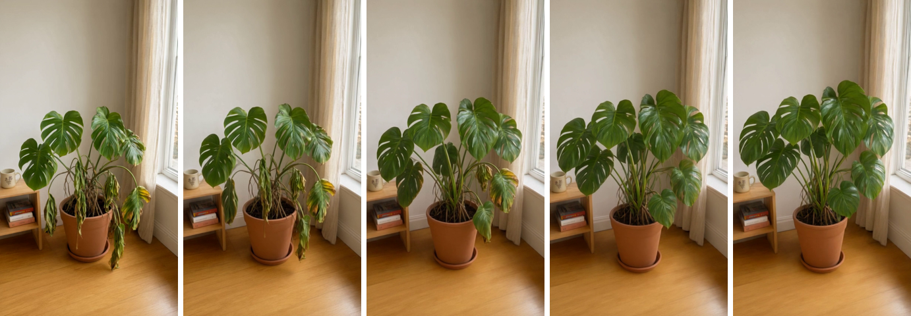
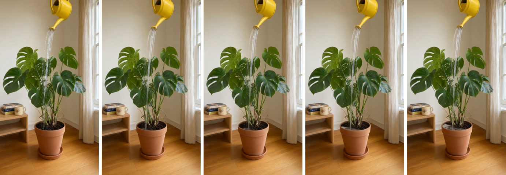

Fernly test, round 2 clips
Round score 75, usable, fix the listed issues. Best set: S05-1 + S01-1. Green border: the best set. Scores are advice; the art director picks.
S05 · Wilting to lush, D1 to L1

S05-1 77 seedance
Clean time-lapse recovery: leaves lift, yellow turns green, room and pot hold. No melting. Soft at 480pS01 · Pour, from P2

S01-1 72 seedance
Rock steady and water pools on the soil, but a thin stream, not the heavy gush asked for; the can never tilts